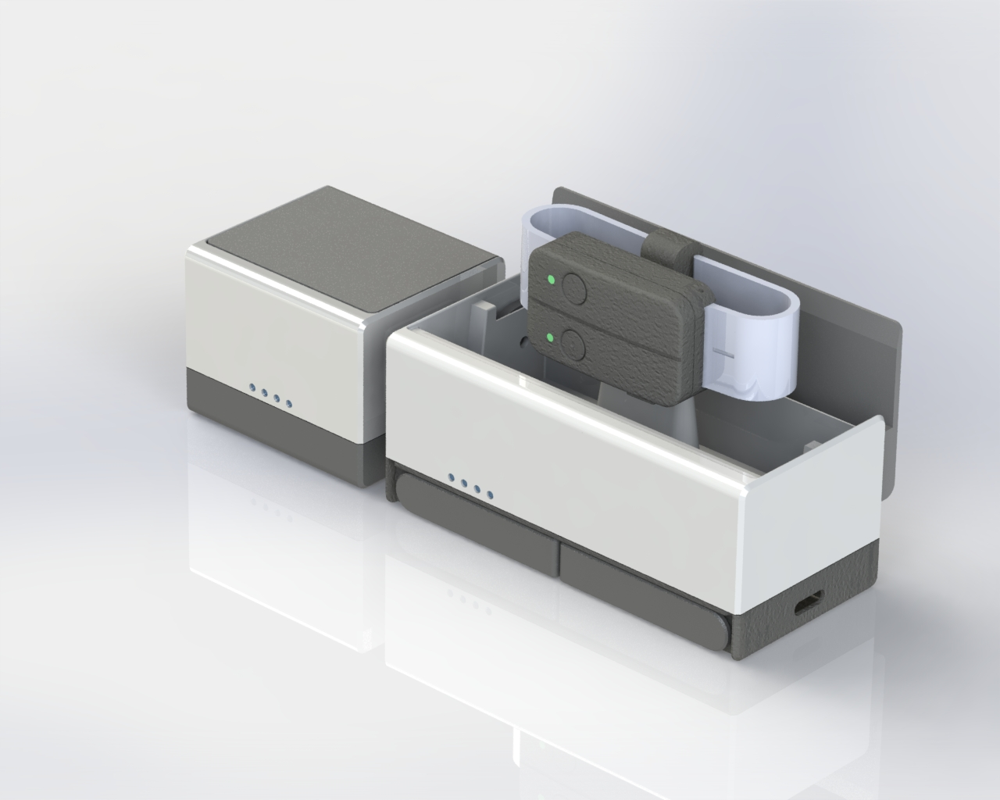

HARDWARE
穿戴式 IMU 感測裝置
9 軸 IMU、藍牙 5.0、三原色指示燈與充電倉設計，專為高爾夫揮桿動作量測打造。
- • 三軸加速度計 + 三軸陀螺儀 + 三軸磁力儀
- • 藍牙 5 代低延遲傳輸，長按啟動 / 關閉設備，雙擊快速關閉藍牙
- • 三原色指示燈：開機、配對成功、低電量一目了然
- • 原型機與 3D 列印外殼完成後，可直接評估量產成本與機構優化

9 軸 IMU 核心模組示意